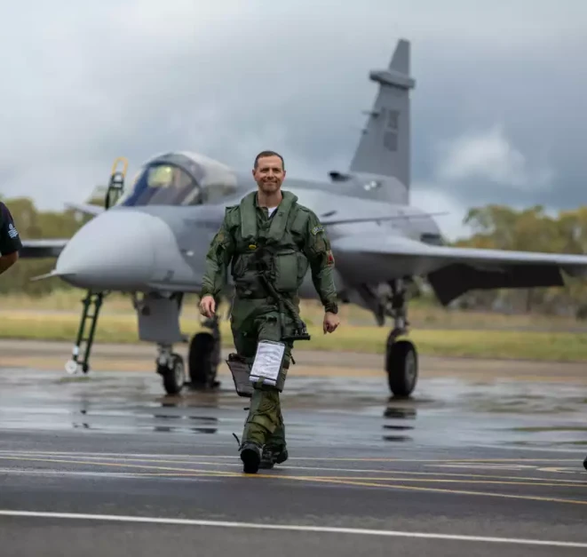
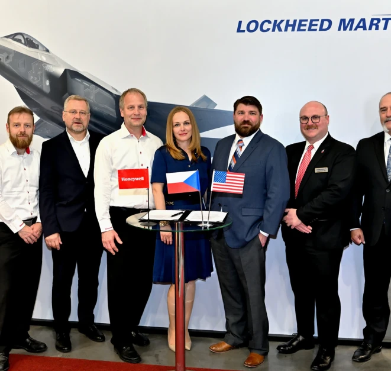

At FURKAN Solutions, we are proud to be historical and trusted partners of Dassault Aviation, a key player in French aeronautics. As early collaborators, we share with Dassault a passion for innovation and technological excellence, two fundamental pillars that guide us in our mission. As a distributor of fighter jets adapted for civil use, we are committed to offering you the best in aeronautical engineering.
Thanks to our close relationship with Dassault, we offer aircraft that combine performance, reliability, and elegance, for extraordinary flight experiences.
Together, FURKAN Solutions and Dassault Aviation are shaping the future of high-performance civil aviation, making cutting-edge technologies from the defense industry accessible. Trust in unique expertise and an alliance founded on French excellence.

At FURKAN Solutions, our partnership with Saab reflects our commitment to excellence and innovation in aviation. As close collaborators, we have forged strong ties with this Swedish aerospace giant, globally recognized for its exceptional fighter jets and cutting-edge technologies. As a distributor of fighter jets for civil use, we benefit from Saab's unique expertise, which has always pushed the boundaries of aeronautical engineering. Thanks to this strategic partnership, FURKAN Solutions offers you aircraft that combine power, maneuverability, and safety, for unparalleled performance in the skies. With Saab as a long-standing ally, we are dedicated to making advanced defense technologies accessible to a demanding and passionate civil clientele. Choose FURKAN Solutions for exceptional aviation, driven by Swedish expertise and a forward-thinking vision.

At FURKAN Solutions, we are honored to be partners with Lockheed Martin, a global leader in aerospace and defense. As early collaborators, we share with this American icon a common quest: to push the boundaries of technology to offer innovative and high-performance aeronautical solutions. Thanks to this strategic partnership, FURKAN Solutions offers fighter jets designed for civil use, based on advanced technologies developed by Lockheed Martin.
These aircraft, synonymous with power, precision, and reliability, embody aeronautical excellence and guarantee an unparalleled flight experience. With Lockheed Martin by our side, we bring you products that meet the highest standards of the defense industry. Trust FURKAN Solutions for high-level civil aviation, the result of a solid partnership with an iconic industry player.
At FURKAN Solutions, we are proud of our long-standing partnership with Israel Aerospace Industries (IAI), a pioneer in aerospace and defense technologies. As early collaborators, we share with IAI a passion for innovation and technical expertise, in the service of cutting-edge aeronautical solutions. Thanks to this strategic collaboration, FURKAN Solutions offers fighter jets adapted for civil use, designed with the advanced technologies stemming from IAI's expertise. These aircraft embody a unique combination of power, performance, and safety, offering an exceptional flight experience to our most demanding clients. With the support of IAI, our mission is to make world-class aeronautical technologies, derived from the defense industry, accessible. By choosing FURKAN Solutions, you opt for aviation excellence driven by a solid partnership with one of the most innovative players in the sector.